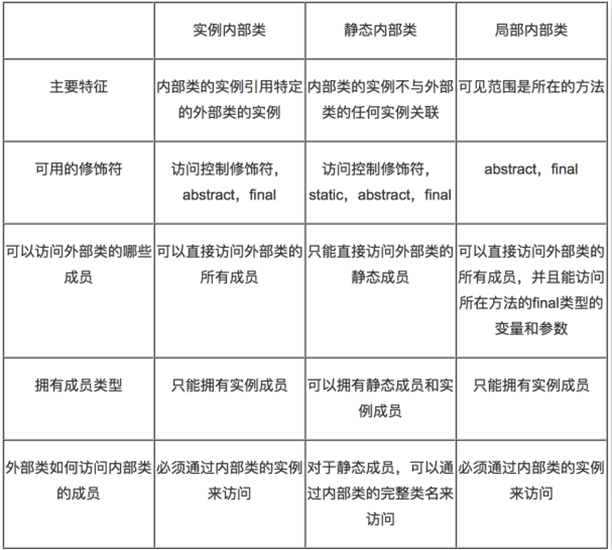

Java中的接口:
专家说的:多个抽象类的抽象就是接口.
说人话:在Java中最小的程序单元就是类,接口其实是一个特殊的类.
Java中的接口表示规范,用于定义一组抽象方法,表示某一类事物必须具备的功能,要求实现类必须来实现该接口并提供方法实现.
定义类语法: [public] class 类名{}
定义接口语法: [public] interface 接口名{},(在这里还没有考虑接口的父接口等等).
接口起名问题: 表示具有某些能力的.有人习惯以able/handler结尾. Walkable,表示可以行走的.
有的公司或个人,习惯以I打头,表示接口,如:IWalkable.java.
成功编译之后,和类一样,具有一份字节码.
接口存在的成员:
1):接口中没有构造器,推论:接口不能创建对象(不能 new ),接口中不能定义普通方法.
2):接口中定义的成员变量,实质是全局静态常量,默认使用 public static final来修饰.
public static final String NAME = "龙17";
3):接口中定义的方法都是公共的抽象方法,默认的使用 public abstract 来修饰方法.
public abstract void walk(); 一般的,我们在接口中定义方法,不喜欢使用修饰符.
4):接口中定义的内部类都是公共的静态内部类,默认使用public static来修饰内部类.
public static interface ABC{}
标志接口:接口中没有任何成员,就仅仅是一个接口的定义,就是一个标志,其他的类实现该接口,就属于该家族,我们可以通过第三方代码赋予该接口实现类特殊的功能(不推荐).
常量接口:有人喜欢使用接口来封装多个常量信息,我们称之为常量接口,其目的和常量类相同(不推荐).
咱们使用的接口,主要都包含了抽象方法.
接口的特点：
① 没有构造方法，也不能显示定义构造器，不能实例化。
② 接口只能继承接口，不能继承类，且接口支持多继承(类是单继承关系)。
[修饰符] interface 接口名 extends 接口1,接口2
③ 接口里的方法方法全是抽象的，默认修饰符是public abstract。
④ 接口里的字段全是全局静态常量，默认修饰符是public static final。
⑤ 接口里的内部类全是公共静态的，默认修饰符是public static。
类和类之间存在是继承关系: 使用extends 来表示.
接口和接口之间只能是继承关系: 使用extends 来表示.
接口和实现类之间只能是实现关系(继承关系),使用implements来表示.
接口的实现者:实现类.
接口仅仅只是定义了某一类事物应该具有某些功能,但是没有提供任何实现.
此时,我们得提供类,再让该类去实现接口,并覆盖接口中的方法,从而实现类接口中定义的功能.
接口和实现类之间的关系,严格上称之为”实现关系”,使用implements来表示.
但是在开发,有时候为了方便也把这个实现关系称之为特殊继承关系.
所以可以这样理解:接口是实现类的父类,实现类就是接口的子类.
面向接口编程:
接口 变量 = 创建实现类对象;//体现了多态思想
接口和实现类的多态关系才是我们见的最多的.
类实现接口的语法: 一个类可以实现多个接口,从而也弥补了类的单继承问题.
[修饰符] class 实现类名 extends 父类 implements 接口1,接口2{}
注意:
接口中的方法是公共的抽象的,所以实现类必须覆盖接口中的方法,并且方法必须使用public修饰.
接口和抽象类的区别:
相同点：
1):都位于继承的顶端，用于被其他实现或继承。
2):都不能实例化。
3):都可以定义抽象方法，其子类/实现类都必须覆写这些抽象方法。
不同：
1):接口没有构造方法，抽象类有构造方法。
2):抽象类可包含普通方法和抽象方法，接口只能包含抽象方法(Java8之前);
3):一个类只能继承一个直接父类(可能是抽象类)，接口是多继承的并且只支持一个类实现多个接口(接口弥补了Java的单继承)。
4):成员变量：接口里默认是public static final，抽象类是默认包权限。
5):方法：接口里默认是public abstract，抽象类默认是默认包访问权限。
6):内部类：接口里默认是public static，抽象类默认是默认包访问权限。
-----------------------------------------------------------
如果接口和实现类可以完成相同的功能,尽量使用接口,面向接口编程.
设计模式:接口 和抽象类集合使用的(适配器模式).
面向接口编程: 多态的好处:把实现类对象赋给接口类型变量,屏蔽了不同实现类之间的实现差异,从而可以做到通用编程.
案例:使用USB设备来工作.
内部类:定义在类结构中的另一个类:
类中的定义的成员:
字段
方法
内部类
-------------------------------------------------------------------
为什么使用内部类：
1):增强封装，把内部类隐藏在外部类之内，不许其他类访问内部类。
2):内部类能提高代码的可读性和可维护性，把小型类嵌入到外部类中结构上代码更靠近。
3):内部类可以直接访问外部类的成员。
内部类根据使用不同的修饰符或者定位的位置不同,分成四张:
四种内部类：
① 实例内部类： 内部类没有使用static修饰.
② 静态内部类： 内部类使用了static修饰.
③ 局部内部类： 在方法中定义的内部类.
④ 匿名内部类适合于仅使用一次使用的类,属于局部内部类的特殊情况：

外部类的访问修饰符:要么使用public,要么就缺省.
内部类看做是外部类的一个成员,好比字段,那么内部类可以使用public/缺省/protected/private修饰.
还可以是static修饰.
-------------------------------------
实例内部类:
没有使用static修饰内部类,说明内部类属于外部类的对象,不属于外部类本身.
特点:
1:创建实例内部类前,必须存在外部类对象,通过外部类对象创建内部类对象(当存在内部类对象时,一定存在外部类对象).
Outter.Inner in = new Outter().new Inner();
2:实例内部类的实例自动持有外部类的实例的引用,内部类可以直接访问外部类成员.
3:外部类中不能直接访问内部类的成员,必须通过内部类的实例去访问.
4:实例内部类中不能定义静态成员,只能定义实例成员.
5:如果实例内部类和外部类存在同名的字段或方法abc,那么在内部类中:
this.abc:表示访问内部类成员.
外部类.this.abc:表示访问外部类成员.
静态内部类:
使用static修饰的内部类.
特点:
1):静态内部类的实例不会自动持有外部类的特定实例的引用,在创建内部类的实例时,不必创建外部类的实例.
Outter.Inner in = new Outter.Inner();
2):静态内部类可以直接访问外部类的静态成员,如果访问外部类的实例成员,必须通过外部类的实例去访问.
3):在静态内部类中可以定义静态成员和实例成员.
4):测试类可以通过完整的类名直接访问静态内部类的静态成员.
局部内部类(打死都不用):
在方法中定义的内部类,其可见范围是当前方法和局部变量是同一个级别.
1):不能使用public,private,protected,static修饰符.
2):局部内部类只能在当前方法中使用.
3):局部内部类和实例内部类一样,不能包含静态成员.
4):局部内部类和实例内部类,可以访问外部类的所有成员.
5):局部内部类访问的局部变量必须使用final修饰(在Java8中是自动隐式加上final,但是依然是常量,不能改变值).
原因:如果当前方法不是main方法,那么当前方法调用完毕之后,当前方法的栈帧被销毁,方法内部的局部变量的空间全部销毁.
然后局部内部类是定义在方法中的,而且在方法中会创建局部内部类对象,而局部内部类会去访问局部变量,当当前方法被销毁的时候,对象还在堆内存,依然持有对局部变量的引用,但是方法被销毁的时候局部变量以及被销毁了.
此时出现:在堆内存中,一个对象引用着一个不存在的数据. 为了避免该问题,我们使用final修饰局部变量,从而变成常量,永驻内存空间,即使方法销毁之后,该局部变量也在内存中,对象可以继续持有.
局部内部类只能访问final修饰的局部变量
匿名内部类(Anonymous),是一个没有名称的局部内部类,适合只使用一次的类。
在开发中经常有这样的类,只需要定义一次,使用一次就可以丢弃了,此时:不应该白白定义在一个文件中.
在JavaSE/Android的事件处理中:不同的按钮点击之后,应该有不同的响应操作,首先使用匿名内部类.
特点:
1):匿名内部类本身没有构造器,但是会调用父类构造器.
2):匿名类尽管没有构造器,但是可以在匿名类中提供一段实例初始化代码块,JVM在调用父类构造器后,会执行该段代码.
3):内部类处理可以继承类之外,还可以实现接口.
格式：
new 父类构造器([实参列表]) 或 接口()
{
//匿名内部类的类体部分
}
注意：匿名内部类必须继承一个父类或者实现一个接口，但最多只能一个父类或实现一个接口。.
枚举是从Java5开始提供的一种新的数据类型,是一个特殊的类,就是固定的多个常量对象的集合.
定义格式:
[修饰符] enum 枚举类名
{
常量A,常量B,常量C;s
}
-------------------------------------------------------------------
我们自定义的枚举类型,在编译(在底层)都是直接继承于java.lang.Enum类的,Enum是所有枚举的父类(看下图).

枚举类的特点:
枚举特点：[这样写没任何意义。每一个特点都是通过具体的原因引入的，不是在这里写总结。]
① 枚举的直接父类java.lang.Enum，但是不能显示继承Enum。
② 枚举就相当于一个类，可以定义构造方法、成员变量、普通方法和抽象方法。
③ 默认私有的造方法，即使不写访问权限也是private((假构造器,底层没有无参数构造器)。
④ 每个实例分别用一个全局常量表示，枚举类的对象是固定的，实例个数有限，不能使用new关键字。
⑤ 枚举实例必须位于枚举体中的最开始部分，枚举实例列表的后要有分号与其他成员相分隔。
⑥ 枚举实例后有花括号时，该实例是枚举类的匿名内部类对象(查看编译后的class文件)。
枚举的使用:
1):枚举中都是全局公共的静态常量,可以直接使用枚举类名调用.
Weekday day = Weekday.SATURDAY;
2):因为java.lang.Enum类是所有枚举类的父类,所以所有的枚举对象可以调用Enum类中的方法.
String name = 枚举对象.name(); //返回枚举对象的常量名称
int ordinal = 枚举对象.ordinal();//返回枚举对象的序号,从0开始.
String str = 枚举对象.toString():返回 枚举对象的常量名称
3):编译器生成的枚举类的静态方法(从反编译代码中):
枚举类型[] values();
Weekday[] ws = Weekday.values();:返回当前枚举类型所有的常量,使用一个数组封装起来.
枚举类型 valueof(String name);
Weekday day = Weekday.valueOf("MONDAY");//把一个指定名称字符串转换为当前枚举类中同名的常量.
4):从java5开始出现枚举,switch也支持操作枚举类型.
switch只支持int类型,支持枚举是因为底层使用的枚举对象的ordinal,而ordinal的类型依然是int类型.